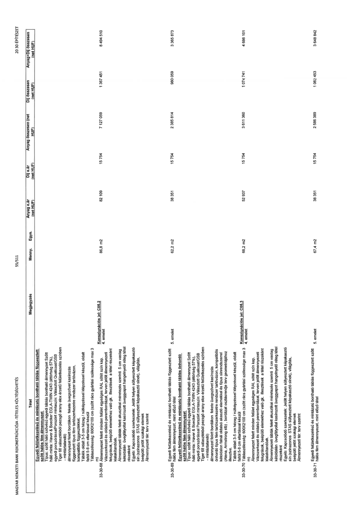

| Tétel | Megjegyzés | Menny. | Egys. | Anyag e.ár (net HUF) | Díj e.ár (net HUF) | Anyag összesen (net HUF) | Díj összesen (net HUF) | Anyag+Díj összesen (net HUF) |
|---|---|---|---|---|---|---|---|---|
| 33-30-68 Egyedi felületkezelésű és mintázatú bontható táblás függesztett szőtt hálós fém álmennyezet Típus: szőtt háló szövésű egyedi táblás bontható álmennyezet Szőtt háló minta: Haver & Boecker EGLA-TWIN 4243 (áttörtség 57%), egyedi porszórással porszórt mintaszín: Választott Qualicoat/GSB Tiger 68 választékból pezsgő arany elox érzetű felületkezelés színben - mintázandó) álmennyezet felett bordákon fekete üvegszövet kasírozás függesztett típus fém tartószerkezet rendszer tartóvázon, kompatibilis függesztékkel, Táblák oldalt 3-5 cm hézag / nútképzéssel képzéssel készül, oldalt faltól 5-8 cm eltartással készül Táblaszélesség: 600X2100 cm (szőtt rács gyártási szélessége max 3 m) Álmennyezet felett minden felület egységes RAL sötét szín kap. Vázszerkezet és oldalsó perembordázat, terven jelölt álmennyezeti felugrások, beépülő elemekhez való gk. illesztések a tétel részeként kialakítandóak. Álmennyezeti táblák felett akusztikai méretezés szerinti 5 cm vastag kétoldalán üvegfátyollal kasírozott üveggyapot hangelnyelő réteg tétel részeként Egyéb: Kapcsolódó szerkezetek: Jelölt helyen süllyesztett képakasztó sín (színazonos STAS süllyesztett képakasztó sínek), világítás, beépülő jelölt szakági elemek Álmennyezeti tér: terv szerint | Konszignációs jel: C05.2 4. emelet | 86,8 | m2 | 82 109 | 15 754 | 7 127 059 | 1 367 451 | 8 494 510 |
| 33-30-69 Egyedi felületkezelésű és mintázatú bontható táblás függesztett szőtt hálós fém álmennyezet, mint előző tétel | 5. emelet | 62,2 | m2 | 38 351 | 15 754 | 2 385 814 | 980 059 | 3 365 873 |
| 33-30-70 Táblaszélesség: 600X2100 cm (szőtt rács gyártási szélessége max 3 m) Álmennyezet felett minden felület egységes RAL sötét szín kap. Vázszerkezet és oldalsó perembordázat, terven jelölt álmennyezeti felugrások, beépülő elemekhez való gk. illesztések a tétel részeként kialakítandóak. Álmennyezeti táblák felett akusztikai méretezés szerinti 5 cm vastag kétoldalán üvegfátyollal kasírozott üveggyapot hangelnyelő réteg tétel részeként Egyéb: Kapcsolódó szerkezetek: Jelölt helyen süllyesztett képakasztó sín (színazonos STAS süllyesztett képakasztó sínek), világítás, beépülő jelölt szakági elemek Álmennyezeti tér: terv szerint | Konszignációs jel: C05.3 4. emelet | 68,2 | m2 | 52 937 | 15 754 | 3 611 360 | 1 074 741 | 4 686 101 |
| 33-30-71 Egyedi felületkezelésű és mintázatú bontható táblás függesztett szőtt hálós fém álmennyezet, mint előző tétel | 5. emelet | 67,4 | m2 | 38 351 | 15 754 | 2 586 389 | 1 062 453 | 3 648 842 |
